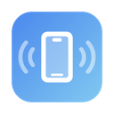
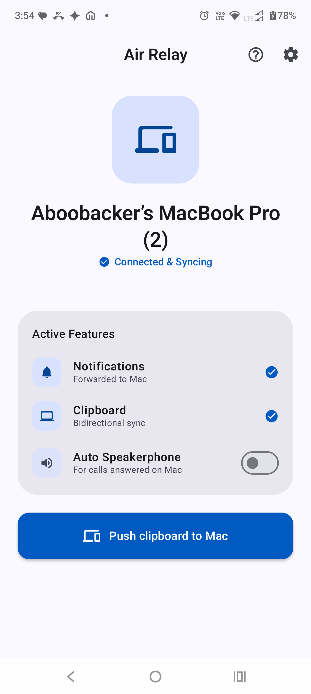
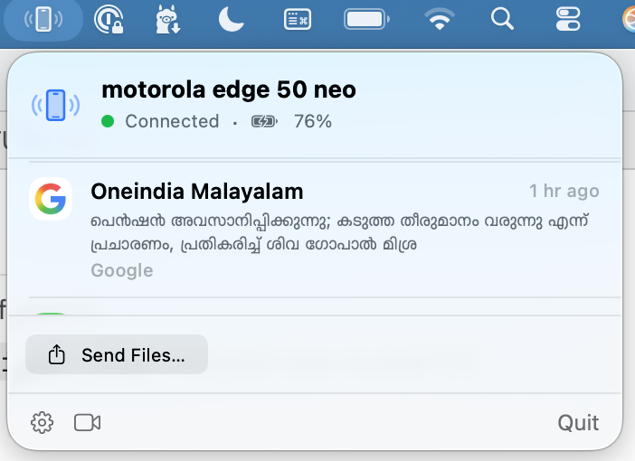

Air RelayYour phone and Mac,
in sync.
Notifications, calls, clipboard and files between Android and macOS — over your own Wi-Fi. No account, no cloud, nothing to configure.


What it does
- Phone notifications appear on the Mac, and you can reply from there.
- Calls ring on both — answer, decline or hang up from the Mac, and the phone switches to speakerphone.
- Copy on one device, paste on the other.
- Send files from either side, straight to Downloads.
- Focus mode, media controls and battery status stay in step.
- Ring your phone from the menu bar when it is lost in the sofa.
Install on Android
- Download
AirRelay.apkon the phone and open it. - Allow your browser or file manager to install unknown apps when asked.
- Open Air Relay and keep it running.
Play Protect may refuse the install.
"App blocked to protect your device" is the scanner's default answer for any app it has no history with, not a finding about this one. To continue: Play Store → profile → Play Protect → gear → turn off Scan apps with Play Protect, then open the APK again. If the phone has Advanced Protection turned on (Settings → Security & privacy), sideloading is blocked outright and has to be allowed first.
Install on macOS
- Download
AirRelay.zipand unzip it. - Drag AirRelay into Applications.
- Right-click the app and choose Open the first time.
The Mac app is not notarised yet.
macOS will warn that it cannot check the app for malicious software.
Right-click → Open, or run
xattr -dr com.apple.quarantine /Applications/AirRelay.app
once. The source is on GitHub, so you can also build it yourself.
Pair the two
- Open Air Relay on the Mac — the menu bar icon shows a QR code.
- Scan it from the phone app, then check that the two short codes match and tap Pair.
Privacy
The apps talk directly to each other over an encrypted connection, pinned to the two devices after that first pairing. There is no server, no account and no analytics — nothing leaves your network.
The phone asks for notification access, call control, and the camera only when you use the camera preview. It reads neither your contacts nor your call log. The full permission list.